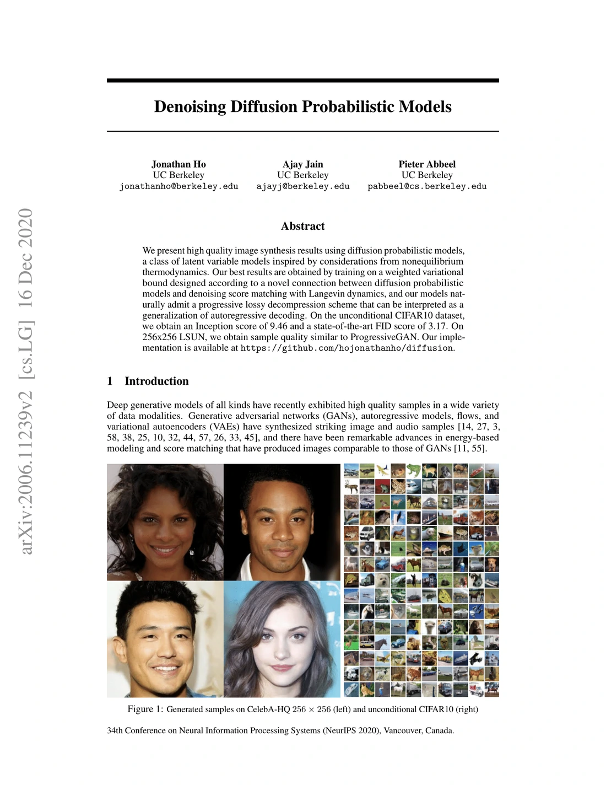
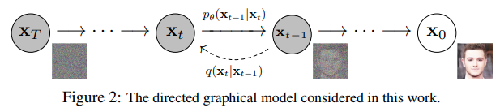
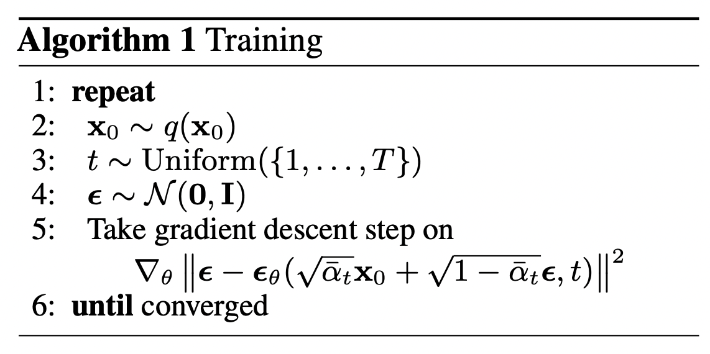
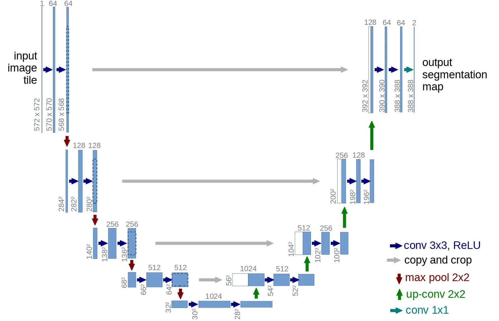
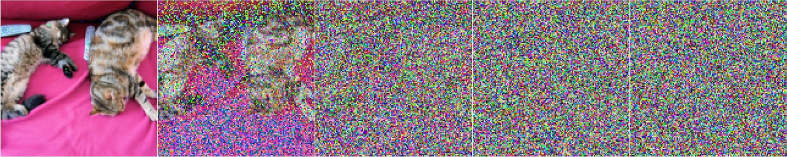
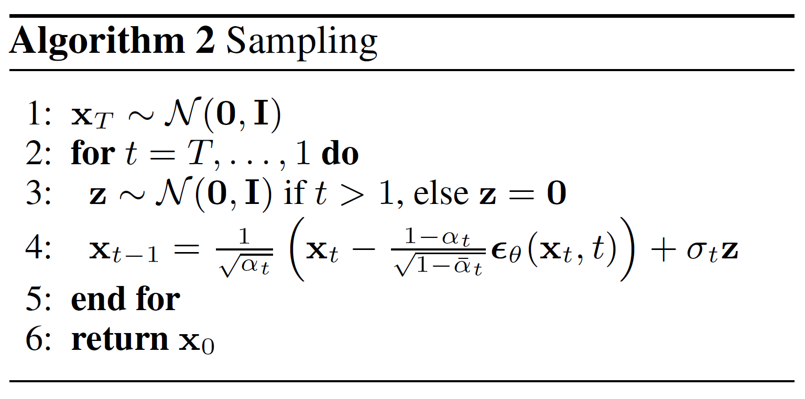
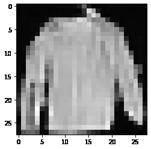
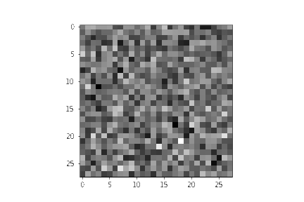

译文依据 Hugging Face 博客 The Annotated Diffusion Model 整理。正文与图表说明为中文，代码保持可运行结构，仅将代码注释与说明性文档字符串译为中文；变量名、可执行字符串与输出保持不变。图片可点击放大查看。
在这篇博客中，我们将深入探讨去噪扩散概率模型（Denoising Diffusion Probabilistic Models，DDPM），也就是大家常说的扩散模型、基于分数的生成模型，或者简单地说——自编码器。近年来，研究者借助这类模型在（无条件 / 条件）图像、音频和视频生成上取得了令人瞩目的成果。写作时较为流行的例子包括 OpenAI 的 GLIDE 和 DALL·E 2、海德堡大学的 Latent Diffusion，以及 Google Brain 的 ImageGen。
我们将以 Ho 等人（2020） 的原始 DDPM 论文为主线，参考 Phil Wang 的实现（它本身又基于原始 TensorFlow 实现），用 PyTorch 一步步实现扩散模型。值得注意的是，扩散用于生成建模的想法其实早在 Sohl-Dickstein 等人（2015） 的工作中就已提出。但直到 Song 等人（2019，斯坦福大学） 以及随后 Ho 等人（2020，Google Brain） 各自独立改进这一方法之后，它才真正大放异彩。
扩散模型有多种观察视角。本文采用离散时间（隐变量模型）视角，但也建议你了解其他视角。
准备好了吗？让我们开始吧！
from IPython.display import Image
Image(filename='assets/78_annotated-diffusion/ddpm_paper.png')


首先安装并导入所需的库（假设你已经安装了 PyTorch）。
!pip install -q -U einops datasets matplotlib tqdm
import math
from inspect import isfunction
from functools import partial
%matplotlib inline
import matplotlib.pyplot as plt
from tqdm.auto import tqdm
from einops import rearrange, reduce
from einops.layers.torch import Rearrange
import torch
from torch import nn, einsum
import torch.nn.functional as F
什么是扩散模型？#
如果把（去噪）扩散模型与其他生成模型——例如 Normalizing Flows、GAN 或 VAE——放在一起比较，它其实并不复杂：这些模型都要把某种简单分布中的噪声转换为数据样本。扩散模型也是如此：神经网络学习如何从纯噪声出发，逐步对数据去噪。
具体到图像，整个设置包含两个过程：
- 一个由我们选定的、固定（或预定义）的前向扩散过程 ：它逐步向图像加入高斯噪声，直到图像变成纯噪声；
- 一个学习得到的逆向去噪扩散过程 ：训练神经网络从纯噪声出发逐步去噪，直到得到一张真正的图像。


前向过程和逆向过程都由 索引，并在有限的 个时间步内完成（DDPM 作者取 ）。从 开始，我们从数据分布中采样一张真实图像 （比如 ImageNet 里的一只猫）；前向过程在每个时间步 从高斯分布中采样噪声，并把它加到上一时间步的图像上。只要 足够大、每个时间步的加噪调度足够合理，经过这一渐进过程，到了 时，数据就会变成所谓的各向同性高斯分布。
更数学化的形式#
下面把它写得更正式一些，因为最终我们需要一个可处理、可供神经网络优化的损失函数。
设 为真实数据分布，例如“真实图像”的分布。我们可以从中采样得到一张图像 。定义前向扩散过程 ：它按照已知的方差调度 ，在每个时间步 加入高斯噪声：
回顾一下：正态分布（也称高斯分布）由两个参数定义——均值 和方差 。基本上，时间步 得到的每张新图像（比上一张略微更嘈杂）都服从一个条件高斯分布，其均值 ，方差 。具体做法是采样 ，再令 。
注意， 并不是每个时间步都相同（这也是下标 存在的原因）——实际上我们定义的是所谓的“方差调度”，它可以线性、二次、余弦等（后文会看到），有点像学习率调度。
因此，从 出发，我们依次得到 。只要调度设置得当， 就是纯高斯噪声。
现在，如果我们知道条件分布 ，就可以反向运行这个过程：先采样一些随机高斯噪声 ，再逐步“去噪”，最终得到来自真实分布的样本 。
但我们并不知道 。要计算这个条件概率，需要知道所有可能图像的分布，因此它是难解的（intractable）。于是，我们借助神经网络来近似（学习）这个条件概率分布，记为 ，其中 是神经网络参数，通过梯度下降更新。
好，现在我们需要一个神经网络来表示逆向过程的条件概率分布。如果假设逆向过程同样是高斯分布，那么别忘了任何高斯分布都由两个参数定义：
- 由 参数化的均值；
- 由 参数化的方差。
所以可以把过程参数化为
其中均值和方差也都以噪声水平 为条件。
因此，神经网络需要学习 / 表示均值和方差。不过 DDPM 作者决定固定方差，只让神经网络学习（表示）这个条件概率分布的均值 。论文中写道：
首先，我们令 ，其中 是不参与训练、仅依赖于时间的常数。实验表明， 和 （见论文）都能取得相似的结果。
后来，Improved diffusion models 论文对此做了改进：神经网络除了均值，也会学习逆向过程的方差。
所以接下来我们继续假设：神经网络只需要学习 / 表示这个条件概率分布的均值。
定义目标函数（通过重参数化均值）#
为了推导学习逆向过程均值的目标函数，作者注意到 和 的组合可以看作一个变分自编码器（VAE）(Kingma 等，2013)。因此，可以使用变分下界（variational lower bound，也叫 ELBO）来最小化相对于真实数据样本 的负对数似然（ELBO 的细节请参阅 VAE 论文）。结果表明，这个过程对应的 ELBO 是每个时间步损失之和：。由于前向 过程和逆向过程的构造方式，损失中的每一项（除 外）实际上都是两个高斯分布之间的 KL 散度，而它可以显式写成关于均值的 L2 损失！
如 Sohl-Dickstein 等人所示，构造出的前向过程 有一个直接结果：给定 ，我们可以在任意噪声水平上直接采样 （因为高斯分布之和仍是高斯分布）。这非常方便：不必反复应用 才能得到 。我们有
其中 ，。我们把这个等式称为“优良性质”（nice property）。它意味着，只要采样高斯噪声、做适当缩放，再加到 上，就能直接得到 。注意， 是已知的 方差调度的函数，因此也是已知的，可以预先计算。这样一来，训练时我们就可以随机优化损失函数 中的某些项（换句话说，训练时随机采样 ，只优化 ）。
如 Ho 等人所示，这个性质还有一个妙处：经过一些数学推导（细节可参阅这篇优秀的博客），我们可以重参数化均值，让神经网络学习（预测）在噪声水平 下加入的噪声（通过网络 ），这些项构成 KL 损失。这意味着神经网络变成了噪声预测器，而不是（直接）预测均值。均值可以这样计算：
最终的目标函数 如下（给定随机时间步 和 ）：
这里， 是初始的（真实、未损坏的）图像， 则由固定的前向过程采样得到。 是在时间步 采样的纯噪声， 是我们的神经网络。网络通过真实高斯噪声与预测噪声之间的简单均方误差（MSE）进行优化。
训练算法现在看起来如下：


展开：算法 1 的中文步骤
- 重复以下步骤：
- 从数据分布中采样 ；
- 均匀采样时间步 ；
- 采样噪声 ；
- 对以下目标做一步梯度下降：；
- 直到模型收敛。
换句话说：
- 从真实、未知且可能非常复杂的数据分布 中随机采样 ；
- 在 到 之间均匀采样一个噪声水平 （即随机时间步）；
- 从高斯分布采样噪声，并在噪声水平 上用该噪声破坏输入（利用上面定义的优良性质）；
- 训练神经网络根据被破坏的图像 预测这份噪声（也就是基于已知调度 加到 上的噪声）。
实际上，这些操作都在数据批次上进行，因为训练神经网络通常使用随机梯度下降。
神经网络#
神经网络需要接收某个时间步的含噪图像，并返回预测的噪声。注意，预测噪声是一个与输入图像尺寸 / 分辨率相同的张量。所以严格来说，网络的输入和输出张量形状相同。那么应该选用什么样的神经网络呢？
这里常用的结构与自编码器非常相似——你可能在典型的“深度学习入门”教程中见过。自编码器在编码器和解码器之间有一个所谓的“瓶颈”层。编码器先把图像编码成更小的隐藏表示，即“瓶颈”；解码器再把该隐藏表示解码回真实图像。这迫使网络只在瓶颈层保留最重要的信息。
在架构选择上，DDPM 作者采用了 U-Net，由 (Ronneberger 等，2015) 提出（当时它在医学图像分割任务上取得了最先进的结果）。和任何自编码器一样，这个网络中间也有一个瓶颈，确保网络只学习最重要的信息。重要的是，它在编码器和解码器之间引入了残差连接，大大改善了梯度流动（受 He 等人 2015 年 ResNet 的启发）。


展开：U-Net 图例中文对照
- input image tile — 输入图像块
- output segmentation map — 输出分割图
- conv 3×3, ReLU — 3×3 卷积 + ReLU
- copy and crop — 复制并裁剪（跳跃连接）
- max pool 2×2 — 2×2 最大池化
- up-conv 2×2 — 2×2 上卷积
- conv 1×1 — 1×1 卷积
如你所见，U-Net 模型首先对输入进行下采样（即降低输入的空间分辨率），然后再进行上采样。
下面我们一步步实现这个网络。
网络辅助函数#
首先定义一些辅助函数和类，稍后实现神经网络时会用到。重要的是，我们定义了一个 Residual 模块，它把输入加到某个函数的输出上（换句话说，为某个函数添加残差连接）。
我们还为下采样和上采样操作定义了别名。
def exists(x):
return x is not None
def default(val, d):
if exists(val):
return val
return d() if isfunction(d) else d
def num_to_groups(num, divisor):
groups = num // divisor
remainder = num % divisor
arr = [divisor] * groups
if remainder > 0:
arr.append(remainder)
return arr
class Residual(nn.Module):
def __init__(self, fn):
super().__init__()
self.fn = fn
def forward(self, x, *args, **kwargs):
return self.fn(x, *args, **kwargs) + x
def Upsample(dim, dim_out=None):
return nn.Sequential(
nn.Upsample(scale_factor=2, mode="nearest"),
nn.Conv2d(dim, default(dim_out, dim), 3, padding=1),
)
def Downsample(dim, dim_out=None):
# 不再使用带步长的卷积或池化
return nn.Sequential(
Rearrange("b c (h p1) (w p2) -> b (c p1 p2) h w", p1=2, p2=2),
nn.Conv2d(dim * 4, default(dim_out, dim), 1),
)
位置嵌入#
由于神经网络的参数在时间（噪声水平）上共享，作者使用正弦位置嵌入来编码 ，这一做法受 Transformer (Vaswani 等，2017) 启发。这样，网络就能“知道”自己正在处理批次中每张图像的哪个时间步（噪声水平）。
SinusoidalPositionEmbeddings 模块接收形状为 (batch_size, 1) 的张量（即批次中若干张含噪图像的噪声水平），并将其转换为形状 (batch_size, dim) 的张量，其中 dim 是位置嵌入的维度。这个嵌入随后会被加到每个残差块中，后面会看到。
class SinusoidalPositionEmbeddings(nn.Module):
def __init__(self, dim):
super().__init__()
self.dim = dim
def forward(self, time):
device = time.device
half_dim = self.dim // 2
embeddings = math.log(10000) / (half_dim - 1)
embeddings = torch.exp(torch.arange(half_dim, device=device) * -embeddings)
embeddings = time[:, None] * embeddings[None, :]
embeddings = torch.cat((embeddings.sin(), embeddings.cos()), dim=-1)
return embeddings
ResNet 块#
接下来定义 U-Net 的核心构建块。DDPM 作者采用了 Wide ResNet 块 (Zagoruyko 等，2016)，但 Phil Wang 把标准卷积层换成了“权重标准化”版本，它与组归一化结合时效果更好（细节见 Kolesnikov 等，2019）。
class WeightStandardizedConv2d(nn.Conv2d):
"""
https://arxiv.org/abs/1903.10520
据称，权重标准化可与组归一化产生协同效果
"""
def forward(self, x):
eps = 1e-5 if x.dtype == torch.float32 else 1e-3
weight = self.weight
mean = reduce(weight, "o ... -> o 1 1 1", "mean")
var = reduce(weight, "o ... -> o 1 1 1", partial(torch.var, unbiased=False))
normalized_weight = (weight - mean) * (var + eps).rsqrt()
return F.conv2d(
x,
normalized_weight,
self.bias,
self.stride,
self.padding,
self.dilation,
self.groups,
)
class Block(nn.Module):
def __init__(self, dim, dim_out, groups=8):
super().__init__()
self.proj = WeightStandardizedConv2d(dim, dim_out, 3, padding=1)
self.norm = nn.GroupNorm(groups, dim_out)
self.act = nn.SiLU()
def forward(self, x, scale_shift=None):
x = self.proj(x)
x = self.norm(x)
if exists(scale_shift):
scale, shift = scale_shift
x = x * (scale + 1) + shift
x = self.act(x)
return x
class ResnetBlock(nn.Module):
"""https://arxiv.org/abs/1512.03385"""
def __init__(self, dim, dim_out, *, time_emb_dim=None, groups=8):
super().__init__()
self.mlp = (
nn.Sequential(nn.SiLU(), nn.Linear(time_emb_dim, dim_out * 2))
if exists(time_emb_dim)
else None
)
self.block1 = Block(dim, dim_out, groups=groups)
self.block2 = Block(dim_out, dim_out, groups=groups)
self.res_conv = nn.Conv2d(dim, dim_out, 1) if dim != dim_out else nn.Identity()
def forward(self, x, time_emb=None):
scale_shift = None
if exists(self.mlp) and exists(time_emb):
time_emb = self.mlp(time_emb)
time_emb = rearrange(time_emb, "b c -> b c 1 1")
scale_shift = time_emb.chunk(2, dim=1)
h = self.block1(x, scale_shift=scale_shift)
h = self.block2(h)
return h + self.res_conv(x)
注意力模块#
接着定义注意力模块，DDPM 作者把它加在卷积块之间。注意力是著名的 Transformer 架构的基本构建块 (Vaswani 等，2017)，已在 AI 的多个领域取得巨大成功，从 NLP、视觉到蛋白质折叠。Phil Wang 采用了两种注意力变体：一种是常规的多头自注意力（Transformer 中使用的那种），另一种是线性注意力变体 (Shen 等，2018)，其时间和内存需求随序列长度线性增长，而常规注意力则是二次增长。
关于注意力机制的详细解释，推荐阅读 Jay Alammar 的精彩博客。
class Attention(nn.Module):
def __init__(self, dim, heads=4, dim_head=32):
super().__init__()
self.scale = dim_head**-0.5
self.heads = heads
hidden_dim = dim_head * heads
self.to_qkv = nn.Conv2d(dim, hidden_dim * 3, 1, bias=False)
self.to_out = nn.Conv2d(hidden_dim, dim, 1)
def forward(self, x):
b, c, h, w = x.shape
qkv = self.to_qkv(x).chunk(3, dim=1)
q, k, v = map(
lambda t: rearrange(t, "b (h c) x y -> b h c (x y)", h=self.heads), qkv
)
q = q * self.scale
sim = einsum("b h d i, b h d j -> b h i j", q, k)
sim = sim - sim.amax(dim=-1, keepdim=True).detach()
attn = sim.softmax(dim=-1)
out = einsum("b h i j, b h d j -> b h i d", attn, v)
out = rearrange(out, "b h (x y) d -> b (h d) x y", x=h, y=w)
return self.to_out(out)
class LinearAttention(nn.Module):
def __init__(self, dim, heads=4, dim_head=32):
super().__init__()
self.scale = dim_head**-0.5
self.heads = heads
hidden_dim = dim_head * heads
self.to_qkv = nn.Conv2d(dim, hidden_dim * 3, 1, bias=False)
self.to_out = nn.Sequential(nn.Conv2d(hidden_dim, dim, 1),
nn.GroupNorm(1, dim))
def forward(self, x):
b, c, h, w = x.shape
qkv = self.to_qkv(x).chunk(3, dim=1)
q, k, v = map(
lambda t: rearrange(t, "b (h c) x y -> b h c (x y)", h=self.heads), qkv
)
q = q.softmax(dim=-2)
k = k.softmax(dim=-1)
q = q * self.scale
context = torch.einsum("b h d n, b h e n -> b h d e", k, v)
out = torch.einsum("b h d e, b h d n -> b h e n", context, q)
out = rearrange(out, "b h c (x y) -> b (h c) x y", h=self.heads, x=h, y=w)
return self.to_out(out)
组归一化#
DDPM 作者在 U-Net 的卷积 / 注意力层之间穿插组归一化 (Wu 等，2018)。下面定义 PreNorm 类，用于在注意力层之前应用组归一化，后文会看到。注意，Transformer 中应该在注意力之前还是之后做归一化，一直存在争论。
class PreNorm(nn.Module):
def __init__(self, dim, fn):
super().__init__()
self.fn = fn
self.norm = nn.GroupNorm(1, dim)
def forward(self, x):
x = self.norm(x)
return self.fn(x)
条件 U-Net#
现在所有构建块（位置嵌入、ResNet 块、注意力和组归一化）都定义好了，是时候定义整个神经网络了。回忆一下，网络 的工作是：接收一批含噪图像及其各自的噪声水平，输出加到输入上的噪声。更正式地说：
- 网络接收形状为
(batch_size, num_channels, height, width)的一批含噪图像，以及形状为(batch_size, 1)的一批噪声水平作为输入，返回形状为(batch_size, num_channels, height, width)的张量。
网络按如下方式构建：
- 首先，在含噪图像批次上应用一个卷积层，并为噪声水平计算位置嵌入；
- 接着，应用一系列下采样阶段。每个下采样阶段包含 2 个 ResNet 块 + 组归一化 + 注意力 + 残差连接 + 一个下采样操作；
- 在网络中部，再次应用 ResNet 块，并与注意力交错；
- 然后，应用一系列上采样阶段。每个上采样阶段包含 2 个 ResNet 块 + 组归一化 + 注意力 + 残差连接 + 一个上采样操作；
- 最后，应用一个 ResNet 块，再接一个卷积层。
归根结底，神经网络就像搭乐高积木一样堆叠层（但理解它们如何工作很重要）。
class Unet(nn.Module):
def __init__(
self,
dim,
init_dim=None,
out_dim=None,
dim_mults=(1, 2, 4, 8),
channels=3,
self_condition=False,
resnet_block_groups=4,
):
super().__init__()
# 确定各层维度
self.channels = channels
self.self_condition = self_condition
input_channels = channels * (2 if self_condition else 1)
init_dim = default(init_dim, dim)
self.init_conv = nn.Conv2d(input_channels, init_dim, 1, padding=0) # changed to 1 and 0 from 7,3
dims = [init_dim, *map(lambda m: dim * m, dim_mults)]
in_out = list(zip(dims[:-1], dims[1:]))
block_klass = partial(ResnetBlock, groups=resnet_block_groups)
# 时间嵌入
time_dim = dim * 4
self.time_mlp = nn.Sequential(
SinusoidalPositionEmbeddings(dim),
nn.Linear(dim, time_dim),
nn.GELU(),
nn.Linear(time_dim, time_dim),
)
# 网络层
self.downs = nn.ModuleList([])
self.ups = nn.ModuleList([])
num_resolutions = len(in_out)
for ind, (dim_in, dim_out) in enumerate(in_out):
is_last = ind >= (num_resolutions - 1)
self.downs.append(
nn.ModuleList(
[
block_klass(dim_in, dim_in, time_emb_dim=time_dim),
block_klass(dim_in, dim_in, time_emb_dim=time_dim),
Residual(PreNorm(dim_in, LinearAttention(dim_in))),
Downsample(dim_in, dim_out)
if not is_last
else nn.Conv2d(dim_in, dim_out, 3, padding=1),
]
)
)
mid_dim = dims[-1]
self.mid_block1 = block_klass(mid_dim, mid_dim, time_emb_dim=time_dim)
self.mid_attn = Residual(PreNorm(mid_dim, Attention(mid_dim)))
self.mid_block2 = block_klass(mid_dim, mid_dim, time_emb_dim=time_dim)
for ind, (dim_in, dim_out) in enumerate(reversed(in_out)):
is_last = ind == (len(in_out) - 1)
self.ups.append(
nn.ModuleList(
[
block_klass(dim_out + dim_in, dim_out, time_emb_dim=time_dim),
block_klass(dim_out + dim_in, dim_out, time_emb_dim=time_dim),
Residual(PreNorm(dim_out, LinearAttention(dim_out))),
Upsample(dim_out, dim_in)
if not is_last
else nn.Conv2d(dim_out, dim_in, 3, padding=1),
]
)
)
self.out_dim = default(out_dim, channels)
self.final_res_block = block_klass(dim * 2, dim, time_emb_dim=time_dim)
self.final_conv = nn.Conv2d(dim, self.out_dim, 1)
def forward(self, x, time, x_self_cond=None):
if self.self_condition:
x_self_cond = default(x_self_cond, lambda: torch.zeros_like(x))
x = torch.cat((x_self_cond, x), dim=1)
x = self.init_conv(x)
r = x.clone()
t = self.time_mlp(time)
h = []
for block1, block2, attn, downsample in self.downs:
x = block1(x, t)
h.append(x)
x = block2(x, t)
x = attn(x)
h.append(x)
x = downsample(x)
x = self.mid_block1(x, t)
x = self.mid_attn(x)
x = self.mid_block2(x, t)
for block1, block2, attn, upsample in self.ups:
x = torch.cat((x, h.pop()), dim=1)
x = block1(x, t)
x = torch.cat((x, h.pop()), dim=1)
x = block2(x, t)
x = attn(x)
x = upsample(x)
x = torch.cat((x, r), dim=1)
x = self.final_res_block(x, t)
return self.final_conv(x)
定义前向扩散过程#
前向扩散过程在 个时间步内逐步向真实分布中的图像添加噪声。这一过程遵循方差调度。原始 DDPM 作者采用了线性调度：
我们把前向过程的方差设为常数，从 线性增加到 。
不过，Nichol 等人（2021）表明，采用余弦调度可以获得更好的结果。
下面定义 个时间步的多种调度（稍后选择其中一种）。
def cosine_beta_schedule(timesteps, s=0.008):
"""
余弦调度，提出于 https://arxiv.org/abs/2102.09672
"""
steps = timesteps + 1
x = torch.linspace(0, timesteps, steps)
alphas_cumprod = torch.cos(((x / timesteps) + s) / (1 + s) * torch.pi * 0.5) ** 2
alphas_cumprod = alphas_cumprod / alphas_cumprod[0]
betas = 1 - (alphas_cumprod[1:] / alphas_cumprod[:-1])
return torch.clip(betas, 0.0001, 0.9999)
def linear_beta_schedule(timesteps):
beta_start = 0.0001
beta_end = 0.02
return torch.linspace(beta_start, beta_end, timesteps)
def quadratic_beta_schedule(timesteps):
beta_start = 0.0001
beta_end = 0.02
return torch.linspace(beta_start**0.5, beta_end**0.5, timesteps) ** 2
def sigmoid_beta_schedule(timesteps):
beta_start = 0.0001
beta_end = 0.02
betas = torch.linspace(-6, 6, timesteps)
return torch.sigmoid(betas) * (beta_end - beta_start) + beta_start
首先，我们使用线性调度，取 个时间步，并定义后面会用到的、由 导出的各种变量，例如方差累积乘积 。下面的每个变量都是一维张量，存储从 到 的值。重要的是，我们还定义了 extract 函数，用于根据一批索引取出对应的 值。
timesteps = 300
# 定义 beta 调度
betas = linear_beta_schedule(timesteps=timesteps)
# 定义 alpha
alphas = 1. - betas
alphas_cumprod = torch.cumprod(alphas, axis=0)
alphas_cumprod_prev = F.pad(alphas_cumprod[:-1], (1, 0), value=1.0)
sqrt_recip_alphas = torch.sqrt(1.0 / alphas)
# 计算扩散过程 q(x_t | x_{t-1}) 等所需项
sqrt_alphas_cumprod = torch.sqrt(alphas_cumprod)
sqrt_one_minus_alphas_cumprod = torch.sqrt(1. - alphas_cumprod)
# 计算后验 q(x_{t-1} | x_t, x_0) 所需项
posterior_variance = betas * (1. - alphas_cumprod_prev) / (1. - alphas_cumprod)
def extract(a, t, x_shape):
batch_size = t.shape[0]
out = a.gather(-1, t.cpu())
return out.reshape(batch_size, *((1,) * (len(x_shape) - 1))).to(t.device)
下面用一张猫的图像演示扩散过程的每个时间步如何加噪。
from PIL import Image
import requests
url = 'http://images.cocodataset.org/val2017/000000039769.jpg'
image = Image.open(requests.get(url, stream=True).raw) # PIL image of shape HWC
image

噪声是加在 PyTorch 张量上，而不是 Pillow 图像上的。我们先定义图像变换，把 PIL 图像转换为 PyTorch 张量（以便加噪），以及反向转换。
这些变换相当简单：先除以 归一化（使值落在 范围），再确保它们位于 范围。来自 DDPM 论文：
我们假设图像数据由 中的整数组成，并线性缩放到 。这确保神经网络逆向过程始终在统一缩放的输入上运行，并从标准正态先验 出发。
from torchvision.transforms import Compose, ToTensor, Lambda, ToPILImage, CenterCrop, Resize
image_size = 128
transform = Compose([
Resize(image_size),
CenterCrop(image_size),
ToTensor(), # turn into torch Tensor of shape CHW, divide by 255
Lambda(lambda t: (t * 2) - 1),
])
x_start = transform(image).unsqueeze(0)
x_start.shape
torch.Size([1, 3, 128, 128])我们还定义了反向变换：接收值在 的 PyTorch 张量，把它转回 PIL 图像：
import numpy as np
reverse_transform = Compose([
Lambda(lambda t: (t + 1) / 2),
Lambda(lambda t: t.permute(1, 2, 0)), # CHW to HWC
Lambda(lambda t: t * 255.),
Lambda(lambda t: t.numpy().astype(np.uint8)),
ToPILImage(),
])
验证一下：
reverse_transform(x_start.squeeze())

现在可以按论文定义前向扩散过程了：
# 前向扩散（利用“优良性质”）
def q_sample(x_start, t, noise=None):
if noise is None:
noise = torch.randn_like(x_start)
sqrt_alphas_cumprod_t = extract(sqrt_alphas_cumprod, t, x_start.shape)
sqrt_one_minus_alphas_cumprod_t = extract(
sqrt_one_minus_alphas_cumprod, t, x_start.shape
)
return sqrt_alphas_cumprod_t * x_start + sqrt_one_minus_alphas_cumprod_t * noise
在某个特定时间步上测试：
def get_noisy_image(x_start, t):
# 添加噪声
x_noisy = q_sample(x_start, t=t)
# 转换回 PIL 图像
noisy_image = reverse_transform(x_noisy.squeeze())
return noisy_image
# 取一个时间步
t = torch.tensor([40])
get_noisy_image(x_start, t)

把不同时间步的效果可视化：
import matplotlib.pyplot as plt
# 设置随机种子，保证可复现
torch.manual_seed(0)
# source: https://pytorch.org/vision/stable/auto_examples/plot_transforms.html#sphx-glr-auto-examples-plot-transforms-py
def plot(imgs, with_orig=False, row_title=None, **imshow_kwargs):
if not isinstance(imgs[0], list):
# 即使只有一行，也构造成二维网格
imgs = [imgs]
num_rows = len(imgs)
num_cols = len(imgs[0]) + with_orig
fig, axs = plt.subplots(figsize=(200,200), nrows=num_rows, ncols=num_cols, squeeze=False)
for row_idx, row in enumerate(imgs):
row = [image] + row if with_orig else row
for col_idx, img in enumerate(row):
ax = axs[row_idx, col_idx]
ax.imshow(np.asarray(img), **imshow_kwargs)
ax.set(xticklabels=[], yticklabels=[], xticks=[], yticks=[])
if with_orig:
axs[0, 0].set(title='Original image')
axs[0, 0].title.set_size(8)
if row_title is not None:
for row_idx in range(num_rows):
axs[row_idx, 0].set(ylabel=row_title[row_idx])
plt.tight_layout()
plot([get_noisy_image(x_start, torch.tensor([t])) for t in [0, 50, 100, 150, 199]])


这意味着，给定模型后，我们可以如下定义损失函数：
def p_losses(denoise_model, x_start, t, noise=None, loss_type="l1"):
if noise is None:
noise = torch.randn_like(x_start)
x_noisy = q_sample(x_start=x_start, t=t, noise=noise)
predicted_noise = denoise_model(x_noisy, t)
if loss_type == 'l1':
loss = F.l1_loss(noise, predicted_noise)
elif loss_type == 'l2':
loss = F.mse_loss(noise, predicted_noise)
elif loss_type == "huber":
loss = F.smooth_l1_loss(noise, predicted_noise)
else:
raise NotImplementedError()
return loss
denoise_model 就是上面定义的 U-Net。我们将使用真实噪声与预测噪声之间的 Huber 损失。
定义 PyTorch Dataset 与 DataLoader#
这里定义一个常规的 PyTorch Dataset。数据集就是来自真实数据集的图像，例如 Fashion-MNIST、CIFAR-10 或 ImageNet，并线性缩放到 。
每张图像都会调整到相同尺寸。有趣的是，图像还会随机水平翻转。论文中写道：
在 CIFAR10 上训练时，我们使用了随机水平翻转；我们尝试了带翻转和不带翻转的训练，发现翻转能略微提升样本质量。
这里使用 🤗 Datasets 库，从 Hub 轻松加载 Fashion-MNIST 数据集。该数据集中的图像已经具有相同分辨率，即 28×28。
from datasets import load_dataset
# 从 Hub 加载数据集
dataset = load_dataset("fashion_mnist")
image_size = 28
channels = 1
batch_size = 128
接下来定义一个函数，在整个数据集上即时应用。我们使用 with_transform 功能来实现。该函数只做基本图像预处理：随机水平翻转、重新缩放，最后让值落在 范围。
from torchvision import transforms
from torch.utils.data import DataLoader
# 定义图像变换（例如使用 torchvision）
transform = Compose([
transforms.RandomHorizontalFlip(),
transforms.ToTensor(),
transforms.Lambda(lambda t: (t * 2) - 1)
])
# 定义处理函数
def transforms(examples):
examples["pixel_values"] = [transform(image.convert("L")) for image in examples["image"]]
del examples["image"]
return examples
transformed_dataset = dataset.with_transform(transforms).remove_columns("label")
# 创建 DataLoader
dataloader = DataLoader(transformed_dataset["train"], batch_size=batch_size, shuffle=True)
batch = next(iter(dataloader))
print(batch.keys())
dict_keys(['pixel_values'])采样#
训练过程中我们会从模型采样（以跟踪进度），因此下面定义采样代码。论文把采样总结为算法 2：


展开：算法 2 的中文步骤
- 采样初始噪声 ；
- for do
- 若 ，采样 ；否则令 ；
- 计算 ；
- end for
- 返回 。
从扩散模型生成新图像，就是逆转扩散过程：从 开始，从高斯分布采样纯噪声，然后利用神经网络逐步去噪（使用它学到的条件概率），直到时间步 。如上所示，把均值的重参数化形式代入，并用噪声预测器，就能得到略微少噪一点的图像 。记住，方差是提前已知的。
理想情况下，最终得到的图像看起来像是来自真实数据分布。
下面的代码实现了这一点。
@torch.no_grad()
def p_sample(model, x, t, t_index):
betas_t = extract(betas, t, x.shape)
sqrt_one_minus_alphas_cumprod_t = extract(
sqrt_one_minus_alphas_cumprod, t, x.shape
)
sqrt_recip_alphas_t = extract(sqrt_recip_alphas, t, x.shape)
# 论文中的式 (11)
# 用模型（噪声预测器）预测均值
model_mean = sqrt_recip_alphas_t * (
x - betas_t * model(x, t) / sqrt_one_minus_alphas_cumprod_t
)
if t_index == 0:
return model_mean
else:
posterior_variance_t = extract(posterior_variance, t, x.shape)
noise = torch.randn_like(x)
# 算法 2 第 4 行：
return model_mean + torch.sqrt(posterior_variance_t) * noise
# 算法 2（同时返回所有中间图像）
@torch.no_grad()
def p_sample_loop(model, shape):
device = next(model.parameters()).device
b = shape[0]
# 从纯噪声开始（批中每个样本各一份）
img = torch.randn(shape, device=device)
imgs = []
for i in tqdm(reversed(range(0, timesteps)), desc='sampling loop time step', total=timesteps):
img = p_sample(model, img, torch.full((b,), i, device=device, dtype=torch.long), i)
imgs.append(img.cpu().numpy())
return imgs
@torch.no_grad()
def sample(model, image_size, batch_size=16, channels=3):
return p_sample_loop(model, shape=(batch_size, channels, image_size, image_size))
注意，上面的代码是原始实现的简化版。我们发现这个简化版（与论文算法 2 一致）效果与原始更复杂的实现一样好，后者使用了 clipping。
训练模型#
接下来，用常规 PyTorch 方式训练模型。我们还定义了一些逻辑，定期使用上面定义的 sample 方法保存生成的图像。
from pathlib import Path
def num_to_groups(num, divisor):
groups = num // divisor
remainder = num % divisor
arr = [divisor] * groups
if remainder > 0:
arr.append(remainder)
return arr
results_folder = Path("./results")
results_folder.mkdir(exist_ok = True)
save_and_sample_every = 1000
下面定义模型并把它移到 GPU 上。同时定义标准优化器（Adam）。
from torch.optim import Adam
device = "cuda" if torch.cuda.is_available() else "cpu"
model = Unet(
dim=image_size,
channels=channels,
dim_mults=(1, 2, 4,)
)
model.to(device)
optimizer = Adam(model.parameters(), lr=1e-3)
开始训练！
from torchvision.utils import save_image
epochs = 6
for epoch in range(epochs):
for step, batch in enumerate(dataloader):
optimizer.zero_grad()
batch_size = batch["pixel_values"].shape[0]
batch = batch["pixel_values"].to(device)
# 算法 1 第 3 行：为批中每个样本均匀采样 t
t = torch.randint(0, timesteps, (batch_size,), device=device).long()
loss = p_losses(model, batch, t, loss_type="huber")
if step % 100 == 0:
print("Loss:", loss.item())
loss.backward()
optimizer.step()
# 保存生成的图像
if step != 0 and step % save_and_sample_every == 0:
milestone = step // save_and_sample_every
batches = num_to_groups(4, batch_size)
all_images_list = list(map(lambda n: sample(model, batch_size=n, channels=channels), batches))
all_images = torch.cat(all_images_list, dim=0)
all_images = (all_images + 1) * 0.5
save_image(all_images, str(results_folder / f'sample-{milestone}.png'), nrow = 6)
Loss: 0.46477368474006653
Loss: 0.12143351882696152
Loss: 0.08106148988008499
Loss: 0.0801810547709465
Loss: 0.06122320517897606
Loss: 0.06310459971427917
Loss: 0.05681884288787842
Loss: 0.05729678273200989
Loss: 0.05497899278998375
Loss: 0.04439849033951759
Loss: 0.05415581166744232
Loss: 0.06020551547408104
Loss: 0.046830907464027405
Loss: 0.051029372960329056
Loss: 0.0478244312107563
Loss: 0.046767622232437134
Loss: 0.04305662214756012
Loss: 0.05216279625892639
Loss: 0.04748568311333656
Loss: 0.05107741802930832
Loss: 0.04588869959115982
Loss: 0.043014321476221085
Loss: 0.046371955424547195
Loss: 0.04952816292643547
Loss: 0.04472338408231735采样（推理）#
要从模型采样，只需使用上面定义的 sample 函数：
# 采样 64 张图像
samples = sample(model, image_size=image_size, batch_size=64, channels=channels)
# 随机展示其中一张
random_index = 5
plt.imshow(samples[-1][random_index].reshape(image_size, image_size, channels), cmap="gray")


看起来模型已经能生成一件不错的 T 恤了！请记住，我们训练所用数据集的分辨率相当低（28×28）。
还可以制作去噪过程的 GIF：
import matplotlib.animation as animation
random_index = 53
fig = plt.figure()
ims = []
for i in range(timesteps):
im = plt.imshow(samples[i][random_index].reshape(image_size, image_size, channels), cmap="gray", animated=True)
ims.append([im])
animate = animation.ArtistAnimation(fig, ims, interval=50, blit=True, repeat_delay=1000)
animate.save('diffusion.gif')
plt.show()


延伸阅读#
DDPM 论文表明，扩散模型是（无条件）图像生成的一个有前景的方向。此后，这一方向（极大地）得到了改进，尤其是在文本条件图像生成方面。下面列出一些重要（但远非完整）的后续工作：
- Improved Denoising Diffusion Probabilistic Models (Nichol 等，2021)：发现除了均值之外，再学习条件分布的方差，有助于提升性能。
- Cascaded Diffusion Models for High Fidelity Image Generation (Ho 等，2021)：提出级联扩散，用多个扩散模型组成的流水线逐步生成更高分辨率的图像，以实现高保真图像合成。
- Diffusion Models Beat GANs on Image Synthesis (Dhariwal 等，2021)：通过改进 U-Net 架构并引入分类器引导，证明扩散模型可以取得优于当时最先进生成模型的图像样本质量。
- Classifier-Free Diffusion Guidance (Ho 等，2021)：表明无需额外分类器，只用单个神经网络联合训练条件与无条件扩散模型，也能实现引导。
- Hierarchical Text-Conditional Image Generation with CLIP Latents（DALL·E 2） (Ramesh 等，2022)：先用一个先验网络把文本描述转换为 CLIP 图像嵌入，再由扩散模型将其解码为图像。
- Photorealistic Text-to-Image Diffusion Models with Deep Language Understanding（ImageGen） (Saharia 等，2022)：表明将大型预训练语言模型（如 T5）与级联扩散结合，可以在文本到图像合成上取得良好效果。
注意，这份列表只包含截至写作时（2022 年 6 月 7 日）的重要工作。
目前来看，扩散模型的主要（也许是唯一）缺点是需要多次前向传播才能生成一张图像（GAN 等生成模型则不需要）。不过，已有研究可以在少至 10 个去噪步骤内实现高保真生成。